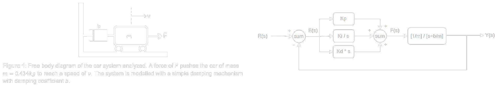

Vehicle Speed Controller
Background
The Information and Decision Science Laboratory at the University of Delaware has a Scaled Smart City (IDS3C) that it uses for testing autonomous vehicles and various robotic and computer science projects. In this project, my team was tasked with developing a speed trajectory controller using Proportional-Integral-Derivative (PID) controls for a scaled robotic car (1:25 scale).

The controller design also has several constraints for functionality as outlined by the project scope:
- Overshoot must be less than 25% of the desired speed
- Settling time must be less than 0.2s
- Steady-state error should not exceed 10%
Calculations
In order to create this PID controller, the system must first be modelled to understand the speed trajectory dynamics. For this, the car was assumed to operate similar to a dampened system which allows the driving force of the car to be related to the final speed output. With this, a first order differential equation was created relating the speed of the vehicle to input step response and various constant parameters such as the mass (m) and damping coefficient (b). Using Laplacian transforms, this differential equation was simplified to determine that the steady state velocity of the vehicle should approach v = F/b where F is the applied force.
These calculations allowed two key components of the controller to be formed. First, the relationship between the steady state speed, the applied force, and the damping coefficient of the car could be used alongside experimental data collected to determine the approximate damping coefficient of the system and tune the constant parameters. Second, with the plant equation calculated using the dynamics of the system, a transfer function can be written. This transfer function will be used to relate the PID controller constants to the time domain specifications as outlined in the project scope in order to create the best performing controller.
Controller Gains
With Equations B5c and B6, the time domain specifications for a second-order system are related to the controller gains desired. By inspection of the transfer function denominator b(s), the Kd term can be solved for by relating it to the mass of the vehicle. For the Kp and Ki gains, second-order approximations are used to relate the damping ratio and natural frequency to the prescribed time domain specifications. With this analysis and subsequent approximations, the following gains were found:
- Kp = 41.418
- Ki = 3245.581
- Kd = 0.566
Results
Simulated Response
The gains found from before were first simulated in MATLAB to verify the accuracy of the approximations used. With an applied step input, the system had an overshoot of Mp = 13.65%, a settling time of ts = 0.14s, and a steady state error of 3.4% within the 0.25s domain analyzed. Note that the non-zero Ki term necessitates zero steady state error with a wider simulation domain.
Laboratory Testing
With these results theoretically validated, the gains were programmed into a robotic car in the IDS3C laboratory for further testing. The vehicle speed was measured against two step inputs and the average system response was recorded. However, with the large amplitude of the noise of the data collected, an overshoot of Mp = 33.80% was recorded and it was indecisive whether steady state was reached, meaning that ts > 1.28s.
From the experimental data collected, more research is needed to tune the parameters based on the realistic response to step inputs observed. The assumptions used in creating this controller--such as modelling the system as a dampened step input or using second-order approximations for the gain calculations--will be analyzed with this new data as well. More accurate data collection is further needed as the noisy vehicle speed data found in the present analysis prevents meaningful conclusions from being drawn.